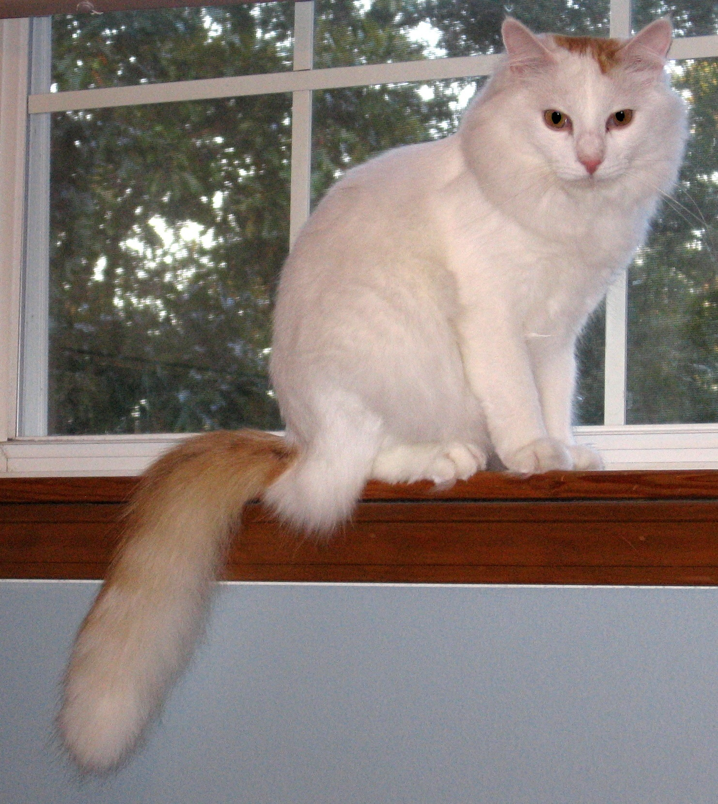

The Turkish Van is a semi-long-haired breed of domestic cat, which was developed in the United Kingdom from a selection of cats obtained from various cities of modern Turkey, especially Southeast Turkey.[1]:112 The breed is rare,[2] and is distinguished by the Van pattern (named for the breed), where the colour is restricted to the head and the tail, and the rest of the cat is white;[2] this is due to the expression of the piebald white spotting gene, a type of partial leucism.[3]:148 A Turkish Van may have blue or amber eyes, or be odd-eyed (having one eye of each colour). The breed has been claimed to be descended from the landrace of usually all-white Van cats (Turkish: Van kedisi), mostly found near Lake Van,[2] though one of the two original breeders' own writings indicate clearly that none of the breed's foundation cats came from the Van area.[1]:114[4]
Then called the Turkish Cat, the breed was first recognised as such by a breeder/fancier organisation, the UK-based Governing Council of the Cat Fancy (GCCF), in 1969.[1]:113 It was later renamed "Turkish Van" to better distinguish it from the Turkish Angora breed. The term "Turkish Vankedisi" is used by some organisations as a name for all-white specimens of the formal Turkish Van breed,[5] nomenclature easily confused with the Van kedisi landrace cats, which are also often all-white.
References:
This article uses material from the Wikipedia article ”Turkish Van", which is released under the Creative Commons Attribution-Share-Alike License 3.0.
1. Pond, Grace (ed.) (1972). The Complete Cat Encyclopedia. London: Walter Parrish Intl. ISBN 0-517-50140-6. This is
a tertiary source that clearly includes information from other sources but does not name them.
2. "Turkish Van Cats". Retrieved 8 April 2014. This is a tertiary source that clearly includes information from other sources but does not name them. This source, in some places, conflates the Turkish Van breed and the Van cat landrace.
3. Vella, Carolyn; Shelton, Lorraine; McGonagle, John; Stanglein, Terry (1999), Robinson's Genetics for Cat Breeders and Veterinarians (4th ed.), Oxford: Butterworth Heineman, p. 253, ISBN 0-7506-4069-3
4. Lushington, Laura (1963), "The Swimming Cats", Animals 1 (17): 24–27, archived from the original on 2 August 2014, “My photographer and I were given special permits visit Van by air, for two days and two nights(...) Now at least I have been to Van, in Eastern Turkey, and seen with my own eyes the ancient city of Van and the glorious Lake Van”
5. "Recognized and Admitted Breeds in the WCF". WCF-Online.de. Essen, Germany: World Cat Federation. 2009. Archived from the original on 13 February 2013. Retrieved 13 February 2013.
Picture: By Zach Pharr (Own work) [Public domain], via Wikimedia Commons
{kind=link}